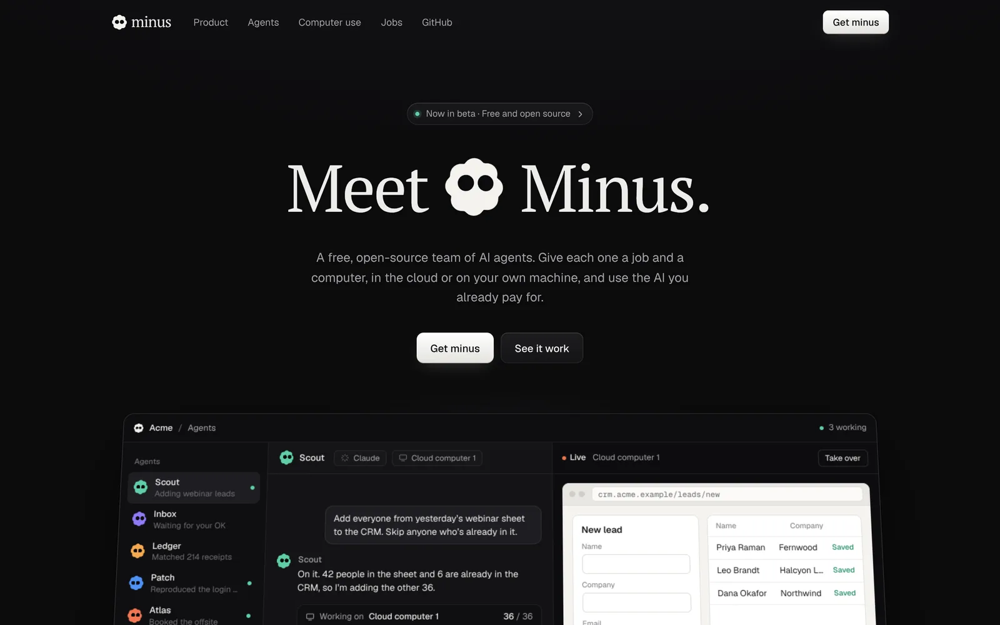
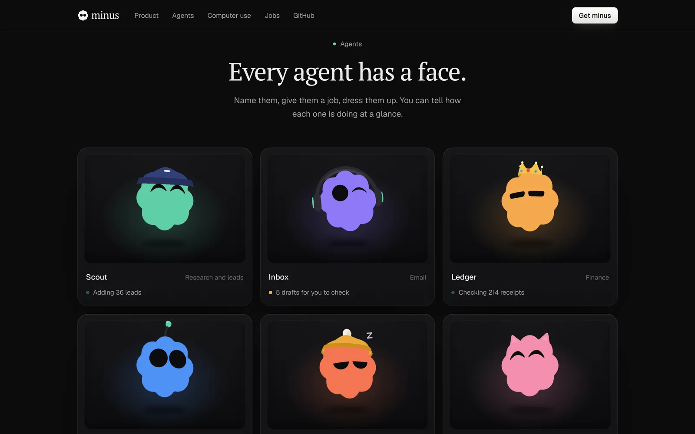
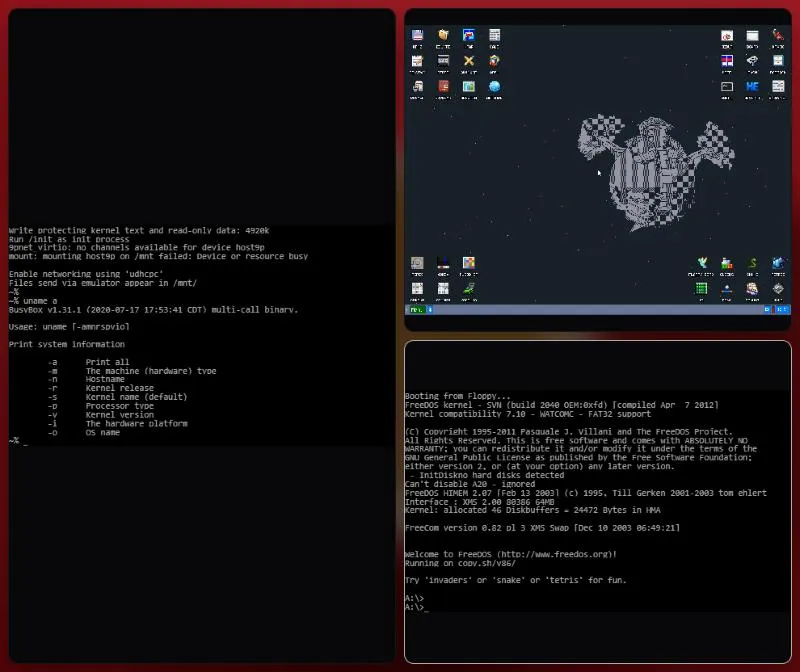
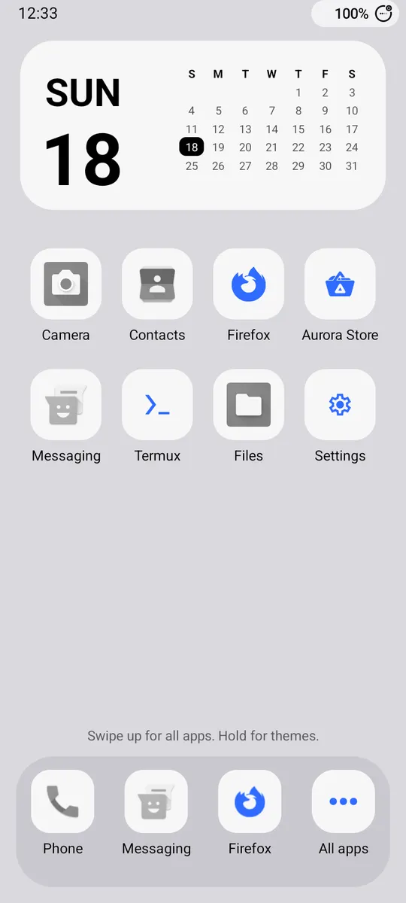
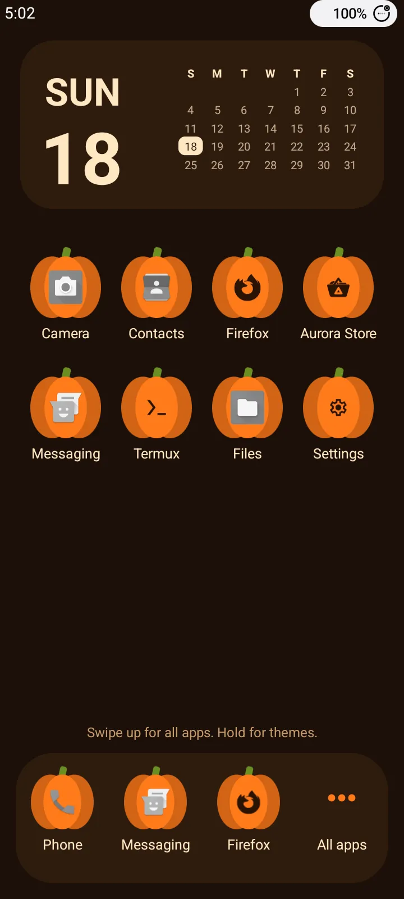
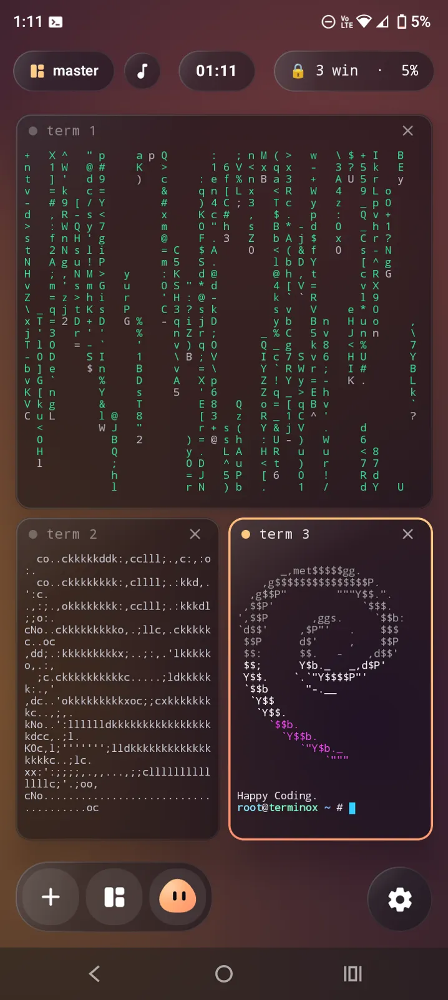
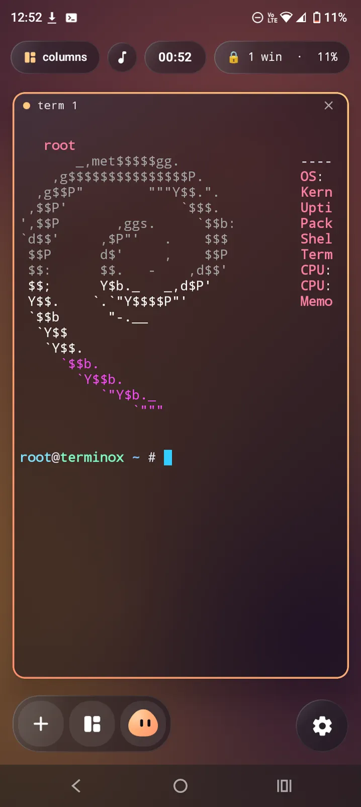
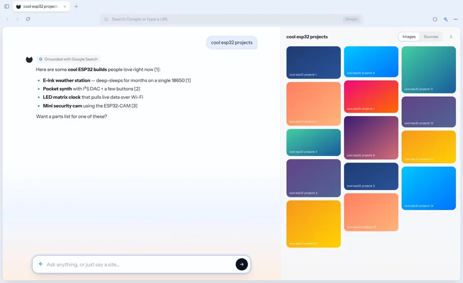
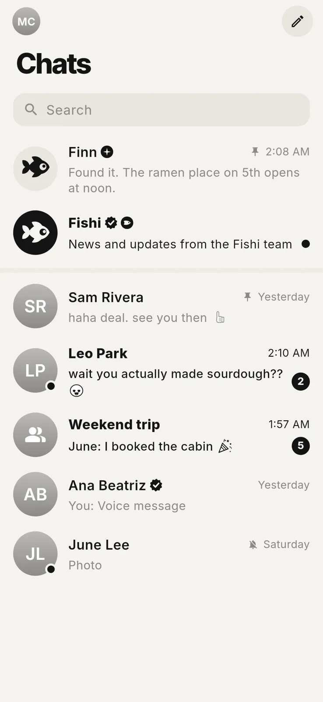
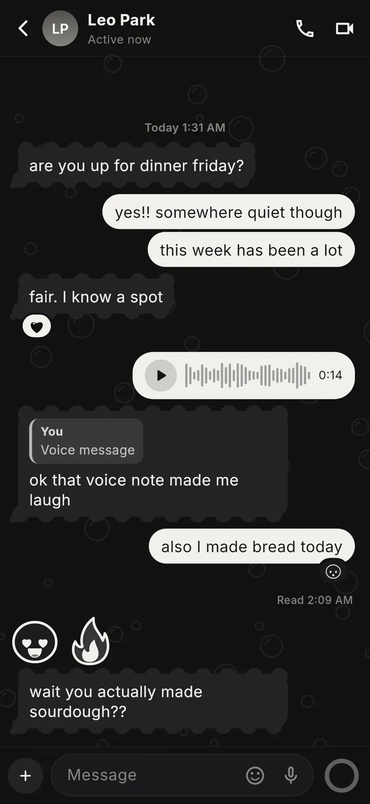

A team, not a chatbot.
Create agents, give each one a job, and let them hand work to each other.
Software engineer · Linux · AI
Hi, I'm Maxwell. I build operating systems in my free time, and right now I'm building Minus.
Main project · now in beta
A free, open-source team of AI agents that work on real computers. In the cloud or on your own machine, with the AI you already pay for.

Create agents, give each one a job, and let them hand work to each other.
Every agent gets its own computer, or uses yours. It clicks, types and switches windows the way you do, and every action is logged.
Claude, ChatGPT, Gemini, Grok, Ollama, OpenRouter or any OpenAI-compatible API. Minus never charges for AI.
Agents ask before anything they can't undo, like sending email or spending money.
Each agent is a small cloud-shaped character with its own color, expression and accessories. A real 3D model drawn flat, so it turns, blinks and reacts like an illustration.
Try the mascot lab →
I like quiet software. Nothing you didn't ask for, silent boots, and windows that arrange themselves. Thinking is a need.
More work
Operating system · planning
Your whole machine, as a multi-VM.
Every OS you use runs side by side as a tile over your wallpaper, on real hardware through KVM. No bar, no dock. Machines save themselves and resume where you left them.

Android OS · 1.5 Pumpkin Caramel
The Linux of Android.
Android 17 with nothing you didn't ask for. Aurora Store, Firefox and Termux. Google Play is banned.


Android app · my first project
A tiling terminal for Android.
Real Debian, no root. Glass windows that tile themselves, seven themes, synced lyrics and an AI blob that types commands for you.


Browser · Windows
Say it. Slice does it.
An AI-native browser on Blink with uBlock Origin built in. Type "yo" and YouTube opens, ask a question and it answers with sources, or tell it to turn lemon colored.

Messenger · Android
A calm, black and white messenger.
Chats, groups, voice notes and calls, 186 chibi emoji drawn in code, and Finn, a built-in AI friend.


Taste
On repeat
Alex G, "Harvey"